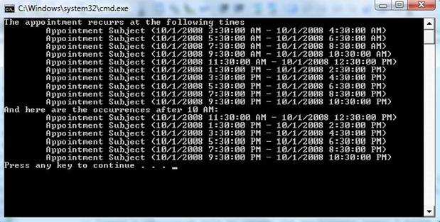

Working with Recurring Appointments
Overview
RadScheduler includes support for recurring events on minutely, hourly, weekly, daily, monthly and yearly basis. Exceptions to the recurrence rules are also permitted. To support this recurrence behavior, the IEvent interface (which the Appointment class implements) includes the RecurrenceRule, MasterEvent, Occurrences and Exceptions properties. When an appointment is assigned a recurrence rule it becomes a recurring appointment.
If the user modifies an individual appointment occurrence, this creates an exception, sets its MasterEvent property to the original recurring appointment and puts it in its Exceptions collection so that no occurrence is generated for the exception occurrence. This way the exception is still linked to the original recurrence series.
The RecurrenceRule class is the engine for creating and evaluating recurrence rules. It serves as a base class to several specialized classes and cannot be instantiated directly. The specialized classes are:
MinutelyRecurrenceRule
HourlyRecurrenceRule
DailyRecurrenceRule
WeeklyRecurrenceRule
MonthlyRecurrenceRule
YearlyRecurrenceRule
Using the specialized classes makes it easier to define recurrence rules because only relevant parameters are specified in their constructors.
Recurring Appointments
One of several constructor overloads lets you set the start time, duration and number of occurences. Then the rule can be assigned
to the appointments RecurrenceRule property. The snippet below defines a rule that starts "now" and recurs every
two hours and stops after the tenth occurence.
[C#] Adding a RecurrenceRule
radScheduler1.Appointments[0].RecurrenceRule = new HourlyRecurrenceRule(DateTime.Now, 2, 10);
[VB.NET] Adding a RecurrenceRule
RadScheduler1.Appointments(0).RecurrenceRule = New HourlyRecurrenceRule(Date.Now, 2, 10)
The Appointment Occurrences property lets you iterate a list of IEvent instances.
To get only some occurrences between specific starting and stopping times, use the Appointment GetOccurrences()
method.
[C#] Iterating occurrences
// iterate all appointment occurrances
foreach (IEvent ev in recurringAppointment.Occurrences)
{
//...
}
// iterate only occurrances after 10am
IEnumerable<IEvent> occurrencesAfter10AM = recurringAppointment.GetOccurrences(
new DateTime(2008, 10, 1, 10, 0, 0), DateTime.Now);
foreach (IEvent ev in occurrencesAfter10AM)
{
//...
}
[VB.NET] Iterating occurrences
' iterate all appointment occurrances
For Each ev As IEvent In recurringAppointment.Occurrences
'...
Next ev
' iterate only occurrances after 10am
Dim occurrencesAfter10AM As IEnumerable(Of IEvent) = recurringAppointment.GetOccurrences(New Date(2008, 10, 1, 10, 0, 0), Date.Now)
For Each ev As IEvent In occurrencesAfter10AM
'...
Next ev
When the user changes a specific occurrence and not the entire series, an "Exception" is created. "Exceptions" in this context refer
to "Exceptions to a rule", not the .NET Exception class related to error handling. You can create exceptions programmatically by adding to
the IEvent MasterEvent.Exceptions collection. The snippet below changes the background and status of an IEvent
instance and adds the IEvent to its own MasterEvent Exceptions collection.
[C#] Adding rule exceptions
myEvent.BackgroundId = (int)AppointmentBackground.Important;
myEvent.StatusId = (int)AppointmentStatus.Tentative;
myEvent.MasterEvent.Exceptions.Add(myEvent);
[VB.NET] Adding rule exceptions
myEvent.BackgroundId = CInt(Fix(AppointmentBackground.Important))
myEvent.StatusId = CInt(Fix(AppointmentStatus.Tentative))
myEvent.MasterEvent.Exceptions.Add(myEvent)
Examples
Here is an example using the HourlyRecurrenceRule class:
[C#]
// Create a sample appointment that starts at 10/1/2008 3:30 AM and lasts half an hour.
Appointment recurringAppointment = new Appointment(new DateTime(2008, 10, 1, 3, 30, 0),
TimeSpan.FromHours(1.0), "Appointment Subject");
// Create a recurrence rule to repeat the appointment every 2 hours for 10 occurrences.
HourlyRecurrenceRule rrule = new HourlyRecurrenceRule(recurringAppointment.Start, 2, 10);
//Assign the hourly recurrence rule to the appointment
recurringAppointment.RecurrenceRule = rrule;
Console.WriteLine("The appointment recurrs at the following times");
foreach (IEvent ev in recurringAppointment.Occurrences)
{
Console.WriteLine("\t{0}", ev);
}
IEnumerable<IEvent> occurrencesAfter10AM = recurringAppointment.GetOccurrences(
new DateTime(2008, 10, 1, 10, 0, 0), DateTime.Now);
Console.WriteLine("And here are the occurrences after 10 AM:");
foreach (IEvent ev in occurrencesAfter10AM)
{
Console.WriteLine("\t{0}", ev);
}
[VB.NET]
' Create a sample appointment that starts at 10/1/2008 3:30 AM and lasts half an hour.
Dim recurringAppointment As New Appointment(New Date(2008, 10, 1, 3, 30, 0), TimeSpan.FromHours(1.0), "Appointment Subject")
' Create a recurrence rule to repeat the appointment every 2 hours for 10 occurrences.
Dim rrule As New HourlyRecurrenceRule(recurringAppointment.Start, 2, 10)
'Assign the hourly recurrence rule to the appointment
recurringAppointment.RecurrenceRule = rrule
Console.WriteLine("The appointment recurrs at the following times")
For Each ev As IEvent In recurringAppointment.Occurrences
Console.WriteLine(vbTab & "{0}", ev)
Next ev
Dim occurrencesAfter10AM As IEnumerable(Of IEvent) = recurringAppointment.GetOccurrences(New Date(2008, 10, 1, 10, 0, 0), Date.Now)
Console.WriteLine("And here are the occurrences after 10 AM:")
For Each ev As IEvent In occurrencesAfter10AM
Console.WriteLine(vbTab & "{0}", ev)
Next ev
The Occurrences property of the Appointment class returns an enumerator that can
be used to retrieve all the occurrences defined by the rule. Similarly the GetOccurrences method of the
Appointment class can be used to retrieve all occurrences in a given interval. The example above produces
the following output:
